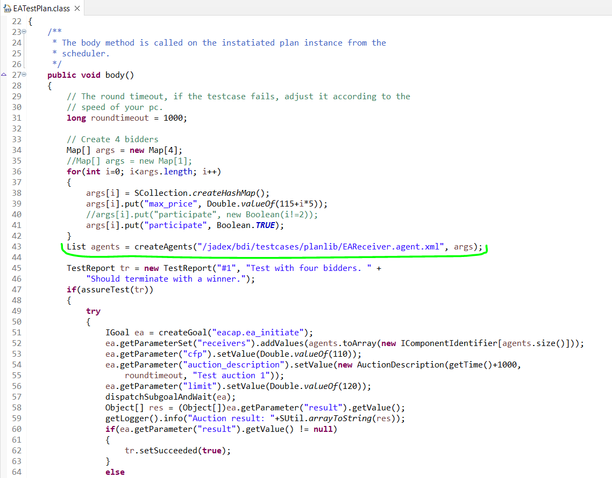

fer999

Da, za Buyera (zapravo modifikovan EAReceiver.agent.xml) isto treba podesiti tako par stvari al sta sam u tom XMLu podesavao je cisto naziv packagea u kojem se nalazi i eventualno za neki <plan> u njegovom <body> elementu koja se klasa koristi.
Za njega nema nikakvog inital plana ili tako nesto jer se on kreira u ovom EATestPlan planu i nakon toga se pokrece aukcija, a za to se sve brine Seller agent.